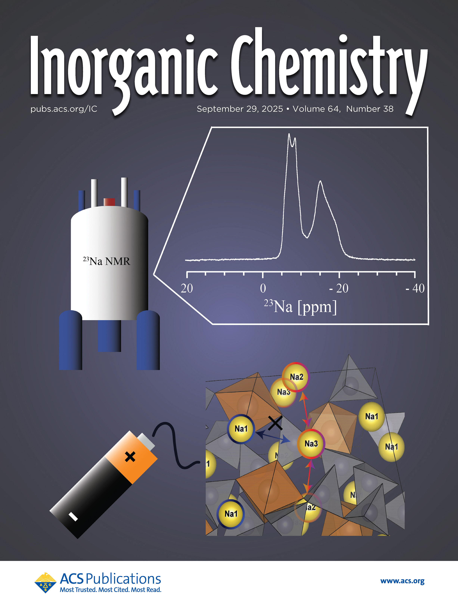

Revealing Na+ Dynamics in the Na4Sn2Ge5O16 Solid Electrolyte Material Using 23Na Solid-State NMR Spectroscopy and Computational Methods
Abstract

Na4Sn2Ge5O16 is a novel Na+ conductor that can be utilized in the next generation of all-solid-state Na+ batteries (ASSNIBs). 23Na ssNMR experiments were carried out on the Na4Sn2Ge5O16 phase to investigate the Na+ dynamics for the three unique crystallographic Na sites under multiple field strengths (20, 11.7, and 7 T). However, completely resolving the fast exchange Na2 and Na3 pair (4c sites) in the 23Na NMR spectra (Na2–3 resonance) was nontrivial under the available experimental conditions. The subsequent relaxation study supports that the Na2–3 peaks are dynamically mediated, in contrast to immobile Na1 peaks. To further understand the dynamic effects on the 23Na NMR spectra, 1D and 2D 3QMAS 23Na spectra under various magnetic field strengths were analyzed to establish possible ranges of “averaged” quadrupolar parameter values for the two sites. With the assistance of density functional theory (DFT)-based CASTEP calculations, simulated lineshapes of the Na1 site (8d) are established, which exhibit excellent agreement with the experimentally determined ones. Subsequently, the EXchange Program for RElaxing Spin Systems (EXPRESS) script was employed to simulate the Na2–3 peaks under dynamic conditions, with a final estimated exchange rate of 2 × 105 Hz. This work paves the way for future studies of Na+ transport at the molecular level in fast-conducting Na-based solid electrolytes (SEs).